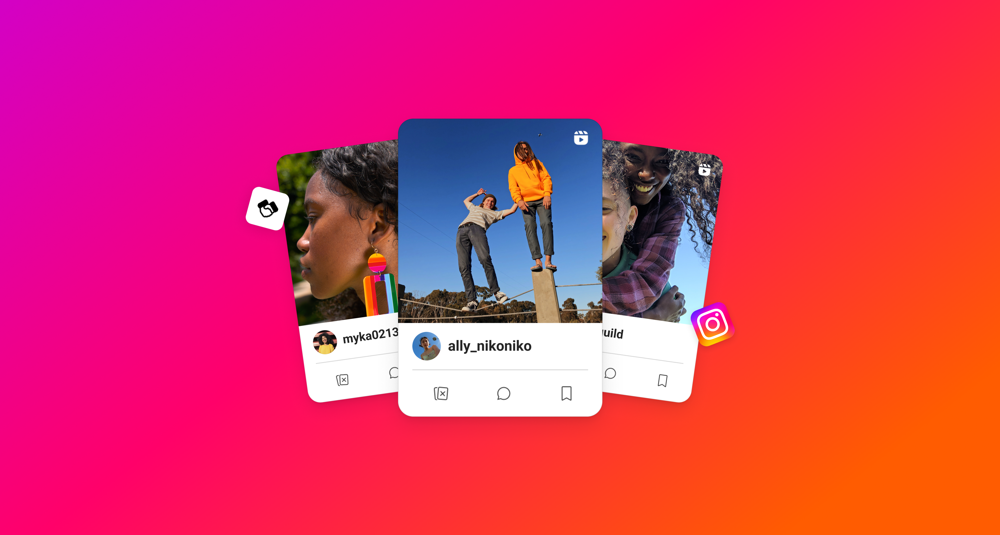
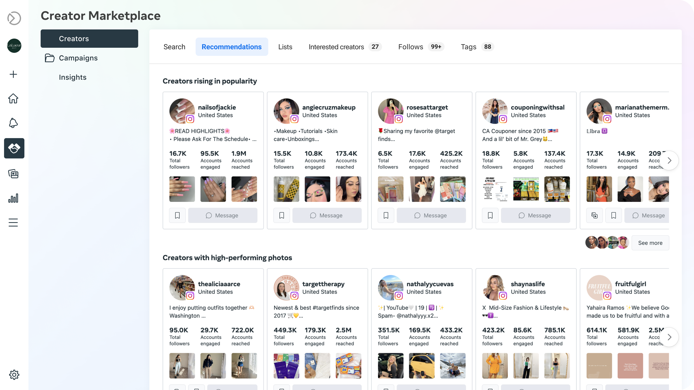
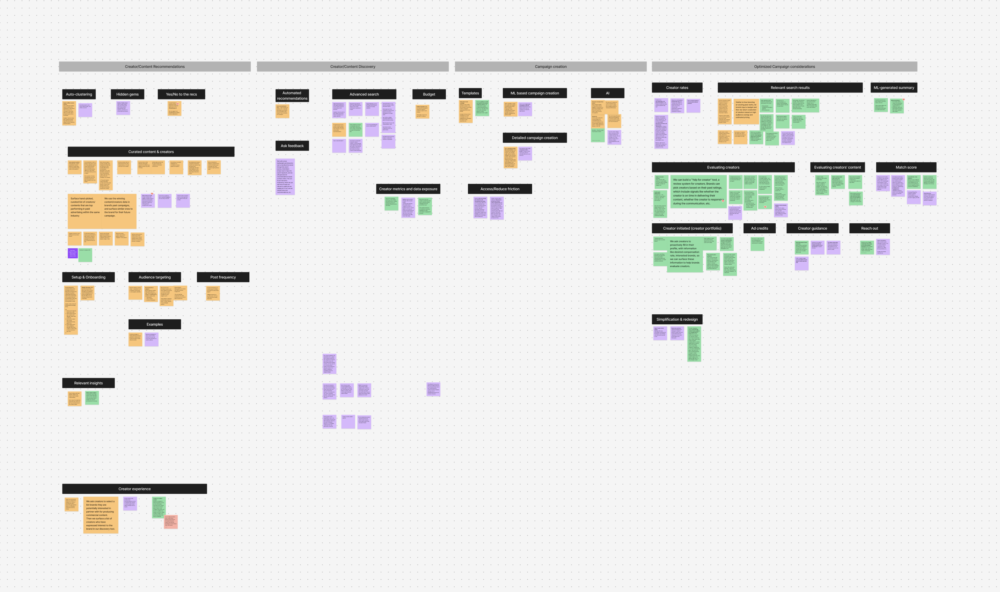
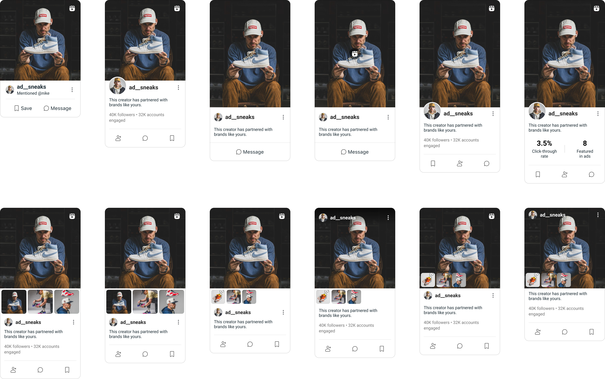
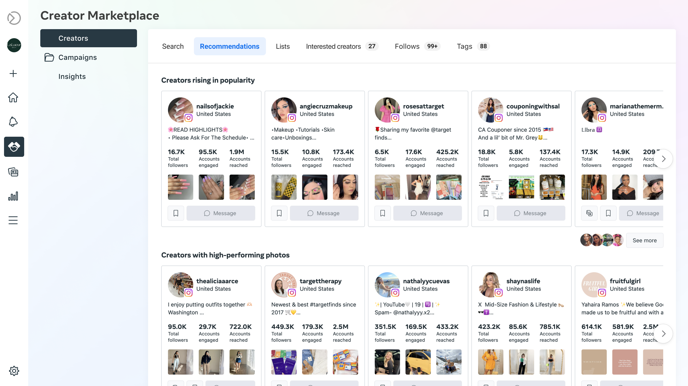
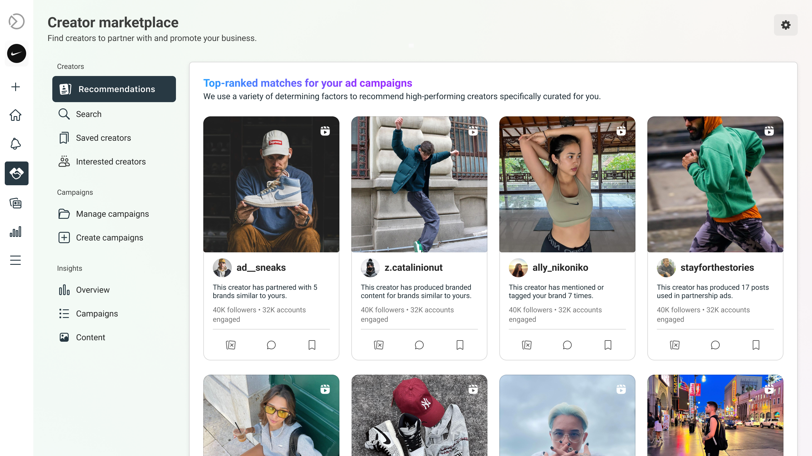

AI-Powered Creator Recommendations
Brands were struggling to find the right creators for partnership ads — the fastest-growing ad format on Instagram. I led the strategy and design to make Creator Marketplace intelligently match brands with creators, driving conversions at scale.
Key Results
From Directory to Matchmaker
Instagram's Creator Marketplace connects brands with creators for partnership ads — one of the platform's most powerful ad formats. Major advertisers like Nike rely on creators like @ad__sneaks to drive traction through genuine, culturally relevant content. But the marketplace was operating as a passive directory — 77% of searches resulted in no match, creator agencies typically spent 1.5 months sourcing creators, and brands had to do all the heavy lifting to find the right fit.
Limited UX
Only basic search filters were available — follower count, location, and category — with no way to preview content or past campaign performance, leading to poor brand-creator matches.
Manual Creator Sourcing
Sourcing and evaluating creators was highly manual — often outsourced entirely to third-party agencies — making it the biggest pain point in running partnership ads efficiently.

The existing Creator Marketplace recommendations — lacking brand relevance, with no direct way to preview creator content or surface ad-related performance data.
The Strategic Pivot
I identified a critical opportunity: leverage Meta's ML capabilities to intelligently surface creators whose content would drive the highest ad conversions — directly fueling Creator Marketplace's strategic pivot toward partnership ads, Instagram's fastest-growing ad format.
My role spanned from high-level vision down to hands-on execution — I set the product direction, aligned leadership and cross-functional stakeholders, shaped the roadmap, and led design reviews and prototyping through launch.
From Brainstorm to Signal

I led strategic planning — mapping the end-to-end matchmaking experience, defining brand Jobs To Be Done, impact-sizing to prioritize MVP features, and aligning with leadership on the H2 2023 roadmap.
I partnered with ML and data science to identify the 6 signals most predictive of ad conversion — translating brainstorming insights into the inputs that power creator-brand matching.
Ad Conversion History
Partnership Track Record
Mentioned or Tagged Brand
Worked with Similar Brands
Affiliate Content
Audience Engagement
Creator Card Explorations

Multiple iterations of creator profile cards exploring different layouts for photos, stats, partnership history, and engagement data.
From Manual Search to Intelligent Matching
Smart Recommendations
Use ML to surface creators whose content and audience align with brand campaign goals — not just follower count.
Efficient Creator Discovery
Let brands explore creator content, engagement data, and partnership history before committing — all in one place.
Optimized Ad Considerations
Surface creators and content that are most likely to convert when amplified as partnership ads.

- Scroll through hundreds of irrelevant profiles
- No way to preview content or past performance
- Weeks spent evaluating creator fit
- Brands often gave up and hired agencies

- Top matches surfaced in seconds
- Rich cards with content, stats & history
- Matching optimized for ad conversions
- Brands discover creators self-serve
Generating New Revenue Streams & Partnerships
The feature launched in February 2024 and immediately drove measurable results — improving match quality, increasing engagement, and unlocking new advertiser partnerships across global markets.
+30% Brand-Creator Matches
ML-powered recommendations directly improved match quality and drove ad conversions, unlocking new revenue channels for Creator Marketplace.
+25% Engagement Rates
Higher-quality creator-brand pairings led to stronger content performance, expanding adoption beyond the U.S. into global markets.
Major Advertisers Onboarded
Onboarded top global advertisers to Creator Marketplace with +20% user satisfaction, validating the platform as a scalable channel for partnership ads.
“In Alpha testing with 10 brands, the new recommendations surface was rated extremely intuitive with zero functionality issues. 100% of partners said the ability to narrow down and inform creator recommendations would increase the value they experience with the product.”
Alpha Test Results
What I Learned
Recommendations Alone Aren't Enough
After launch, brands wanted more control — not just passive recommendations. This led to a follow-up design merging search and recommendations into one experience, letting brands refine ML suggestions on their own terms.
Ad Performance ≠ Content Quality
A creator can meet every partnership ads criterion and still produce content that doesn't resonate. The real challenge was balancing ad conversions with authentic, high-quality content — too complex for MVP but essential for long-term trust.
Defining Strategy Is a Design Skill
This project pushed me beyond design execution into product strategy — defining vision, aligning leadership, and shaping roadmaps. The most effective designers don't just solve the brief; they reframe the problem.